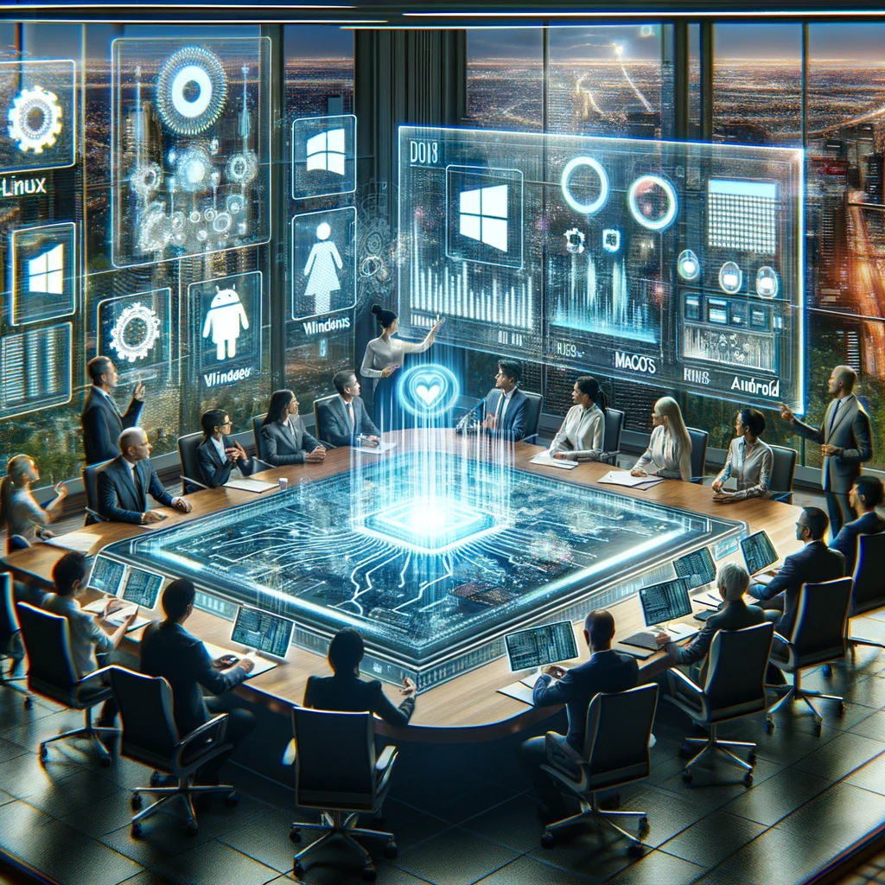

Diseño de un Sistema Informático Municipal
Bienvenidos a Futura Urbis, una ciudad de vanguardia donde la tecnología se encuentra con la sostenibilidad. Como concejales de nuestra innovadora ciudad, tienen la tarea de diseñar un sistema informático que no solo optimice el funcionamiento de un departamento específico, sino que también refleje los valores de eficiencia, sostenibilidad y responsabilidad ética que definen a nuestra comunidad.
Imaginen un entorno donde cada decisión tecnológica impacta directamente en la calidad de vida de nuestros ciudadanos y en el futuro de nuestro planeta. Su misión es elegir el hardware y software más adecuados para este sistema, evaluando cómo cada componente contribuye al bienestar urbano y a la preservación de nuestros recursos.
¡El futuro de Futura Urbis está en sus manos!
Elección del Sistema Operativo para Futura Urbis
En una reunión clave del consejo de Futura Urbis, miembros del consejo y expertos en TIC se reúnen para seleccionar el sistema operativo más adecuado para la ciudad, considerando opciones como Linux, Windows, MacOS y Android.
La discusión se centra en comprender las características de cada sistema, su idoneidad para aplicaciones específicas de la ciudad, y la evaluación del software libre y propietario para ofimática, imágenes y videos. Un aspecto fundamental es el análisis del impacto ético, económico y operativo de cada elección.
Preparad una presentación para la próxima reunión del ayuntamiento, para ello sigue la siguiente guía de trabajo.

Gestión de una Empresa Municipal
Bienvenidos a Futura Urbis, donde estamos dando forma a una nueva visión de la ciudad a través de la creación de una empresa de gestión municipal. En colaboración con el Ayuntamiento, estamos construyendo un modelo de administración eficiente y sostenible, pensado para mejorar los servicios urbanos y la calidad de vida de los ciudadanos.
Este proyecto no es solo una empresa más; es una oportunidad para innovar en la gestión pública, aplicar tecnologías inteligentes y optimizar recursos. Con una mezcla de innovación y responsabilidad, cada decisión que tomemos contribuirá a un futuro urbano más conectado y preparado para los desafíos del mañana.

La transformación de nuestra ciudad comienza aquí, con un equipo comprometido y una visión clara. ¡El futuro de nuestra urbe está en nuestras manos!